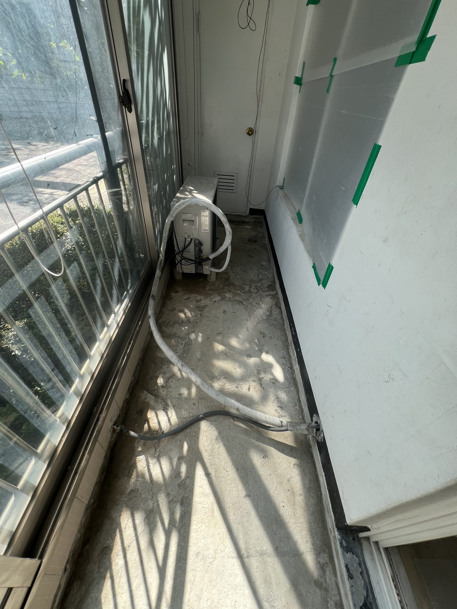
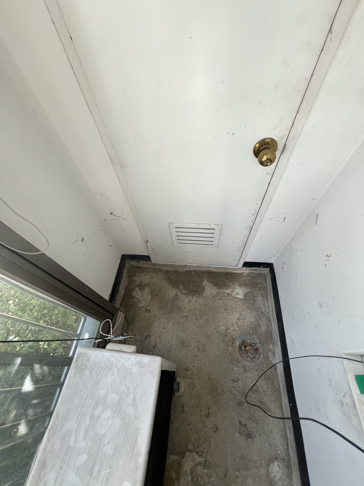
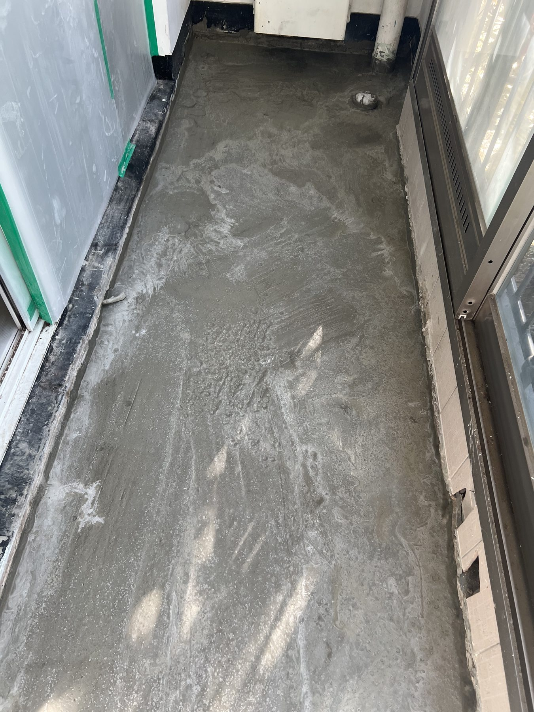
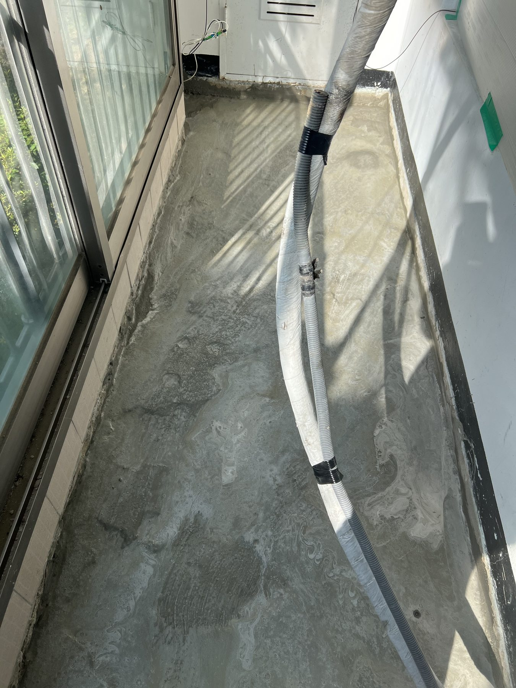
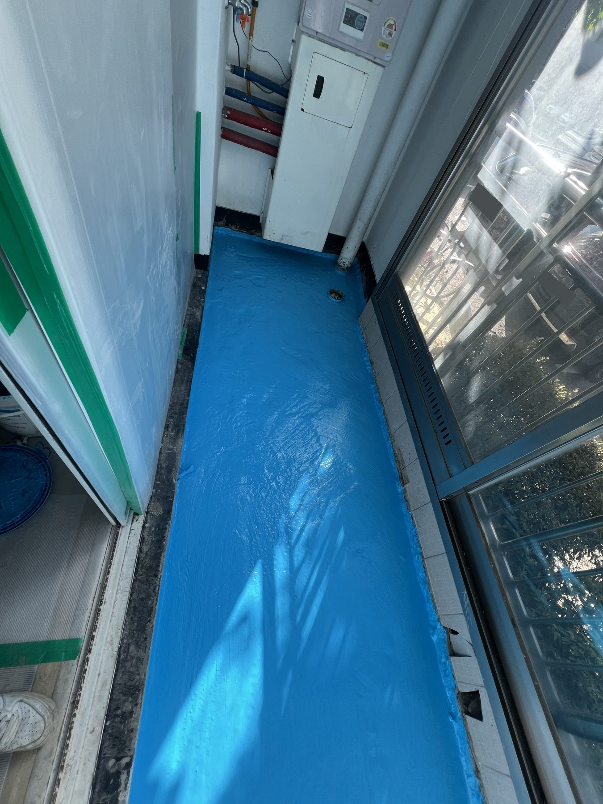

논산 강산부영아파트 베란다 방수, 1차 몰탈에서 2차 도막까지

현장 작업 한눈에 보기
- 현장
- 논산 강산부영아파트 베란다
- 문제
- 기존 바닥 표면과 배수구 주변
방수 작업 전 상태 기록 - 작업
- 1차 몰탈 방수
2차 도막 방수 - 결과
- 베란다 바닥 도막 도포 단계
최종 마감·담수시험 결과는 미확인
논산 강산부영아파트 베란다에서 진행한 방수 공정입니다. 처음의 거친 바닥과 배수구 주변, 1차 몰탈 방수 후의 회색 표면, 2차 도막을 바른 모습까지 같은 공간의 변화를 사진으로 이어 봅니다.
같은 베란다 바닥이 달라지는 과정
안녕하세요. 만물인테리어입니다. 이번에는 논산 강산부영아파트 베란다에서 진행한 방수 작업을 소개합니다.
9월 7일과 8일에 남긴 현장 사진입니다. 처음의 거친 바닥이 1차 몰탈 방수를 거쳐 파란색 도막으로 덮이는 과정을 순서대로 담았습니다.
1. 처음에는 바닥 표면이 드러나 있었습니다
창을 따라 길게 이어지는 베란다입니다. 초기 사진에는 바닥의 거친 표면과 벽 가장자리, 바닥 위로 지나가는 호스가 보입니다.
도막 도포 사진부터 보면 놓치기 쉬운 부분이지요. 먼저 이 모습을 기억해 두시면 뒤의 방수 사진과 비교하기 쉽습니다.

2. 배수구 주변은 가까이 들여다봅니다
베란다 안쪽 배수구를 가까이 찍은 사진입니다. 배수구 주변 바닥과 벽이 만나는 부분의 상태를 함께 볼 수 있습니다.
사진에 보이는 표면 상태만으로 누수 원인을 단정하지는 않습니다. 이번 글은 이 공간에서 실제로 진행한 방수 공정에 초점을 맞췄습니다.

3. 1차 몰탈 방수 후의 회색 바닥
9월 7일에는 1차 몰탈 방수를 진행했습니다. 아래는 다음 날 2차 도막 작업에 들어가기 전 남긴 바닥 사진입니다.
처음 사진과 비교하면 바닥에 새로 펴 바른 층과 가장자리가 보입니다. 아직 파란 도막이 올라가기 전의 중간 단계입니다.

4. 반대쪽 바닥도 같은 순서로 기록
배관이 지나가는 반대쪽도 사진으로 남겼습니다. 바닥 가운데뿐 아니라 벽 하단과 창호 쪽 경계를 함께 볼 수 있는 장면입니다.
바닥 위에 놓여 있던 호스가 들어 올려진 모습도 보입니다. 같은 위치의 다음 사진에서는 이 회색 바닥이 어떻게 바뀌는지 확인할 수 있습니다.

5. 2차 도막을 바른 뒤 달라진 표면
이어서 2차 도막 방수를 진행했습니다. 앞 사진의 회색 바닥 위로 파란색 방수층이 도포된 모습입니다.
창가를 따라 길게 이어진 바닥과 벽 하단의 도포 범위를 볼 수 있습니다. 색만 바뀐 사진 한 장보다 앞 단계와 연결해서 보니 작업 순서가 더 잘 드러납니다.
6. 배수구 쪽까지 이어지는 도막
마지막은 배수구와 수직 배관이 있는 쪽입니다. 파란 도막이 바닥을 따라 이어지고 배수구 위치가 남아 있는 모습을 담았습니다.
여기까지가 이번에 소개하는 2차 도막 도포 단계입니다. 최종 타일 마감이나 담수시험 결과까지 확인한 사진은 아닙니다.

방수 공사는 중간 사진도 함께 남겨 주세요
바닥이 마감되면 그 아래 작업은 다시 보기 어렵습니다. 공사를 진행하실 때 초기 상태와 공정별 사진을 함께 보관해 두시면 어떤 순서로 작업했는지 설명하기 좋습니다.
논산 강산부영아파트 현장도 초기 상태, 1차 몰탈 방수, 2차 도막 방수를 나누어 기록했습니다. 이후 마감과 확인 결과는 후속 기록이 있을 때 이어서 소개하겠습니다.
베란다 방수 상담이 필요하신가요?
베란다 전체 모습과 신경 쓰이는 부분의 사진을 준비해 주시면 상담에 도움이 됩니다. 작업 범위와 일정은 현장 상태를 확인한 뒤 안내드립니다.
만물인테리어 · 010-2397-8629
공개 사진은 차량 번호판만 가렸으며, 시공 모습은 바꾸지 않았습니다.